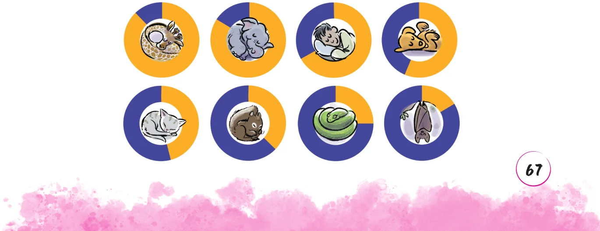
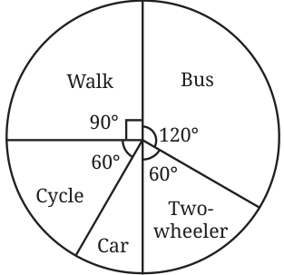
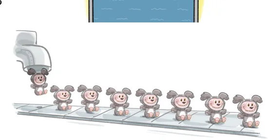

- 1.Which of the following pairs of quantities are in inverse proportion?
- (i)The number of taps filling a water tank and the time taken to
fill it.
- (ii)The number of painters hired and the days needed to paint a
wall of fixed size.
- (iii)The distance a car can travel and the amount of petrol in the
tank.
- (iv)The speed of a cyclist and the time taken to cover a fixed route.
- (v)The length of cloth bought and the price paid at a fixed rate
per metre.
- (vi)The number of pages in a book and the time required to read
it at a fixed reading speed.
- 2.If 24 pencils cost ₹120, how much will 20 such pencils cost?
- 3.A tank on a building has enough water to supply 20 families
living there for 6 days. If 10 more families move in there, how long will the water last? What assumptions do you need to make to work out this problem?
- 4.Fill in the average number of hours each living being sleeps in a
day by looking at the charts. Select the appropriate hours from this list : 15, 2.5, 20, 8, 3.5, 13, 10.5, 18.


- 5.The pie chart on the right shows the

result of a survey carried out to find the modes of transport used by children to go to school. Study the pie chart and answer the following questions.
- (i)What is the most common mode of
transport?
- (ii)What fraction of children travel by
car?
- (iii)If 18 children travel by car, how many children took part in
the survey? How many children use taxis to travel to school?
- (iv)By which two modes of transport are equal numbers of
children travelling?
- 6.Three workers can paint a fence in 4 days. If one more worker joins
the team, how many days will it take them to finish the work? What are the assumptions you need to make?
- 7.It takes 6 hours to fill 2 tanks of the same size with a pump. How
long will it take to fill 5 such tanks with the same pump?
- 8.A given set of chairs are arranged in 25 rows, with 12 chairs in each
row. If the chairs are rearranged with 20 chairs in each row, how many rows does this new arrangement have?
- 9.A school has 8 periods a day, each of 45 minutes duration. How long
is each period, if the school has 9 periods a day, assuming that the number of school hours per day stays the same?
- 10.A small pump can fill a tank in 3 hours,
while a large pump can fill the same tank in 2 hours. If both pumps are used together, how long will the tank take to fill?

- 11.A factory requires 42 machines to
produce a given number of toys in 63 days. How many machines are required to produce the same number of toys in 54 days?
- 12.A car takes 2 hours to reach a
destination, travelling at a speed of 60 km/h. How long will the car take if it travels at a speed of 80 km/h?